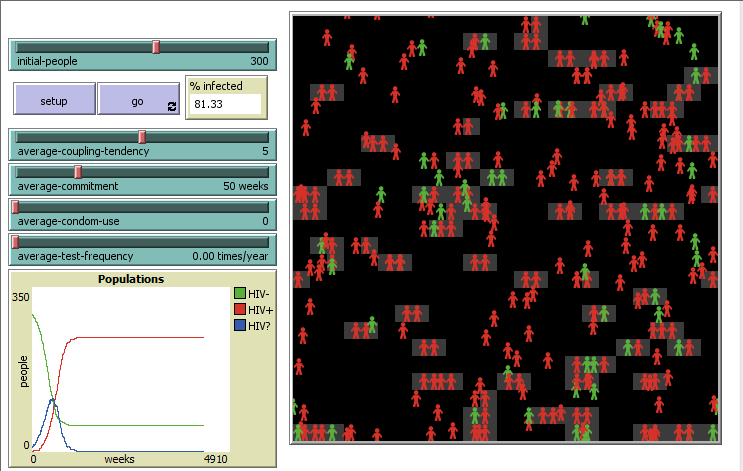

Projects
Scatch Story or Game
This is the game we created for our scratch project. It is meant to be played with a friend.
The objective is to kill your opponent 10 times, in one of several ways. You can do damage
to them, slam dunk them into the pit, or simply have them touch the edge of the screen.
The Developement Process
- Brainstorming- First we came up with what we wanted to do
- Basic Code- We implemented what we wanted in the game
- Debugging- We made it so that you can't cheat or be killed unfairly
- Optimising- We made the controls easier to use for the enjoyment of the player
During this project, I learned:
- How to use algorithms
- How and when to use variables in coding
- Basic coding concepts
- How to use broadcasts
Hertz- Appinventor Project
This app is called Hertz. It is a public speaking app, used to rehearse
for plays, hear speeches and papers read back to you so that you can hear what
they will sound like before you give them, and to encourage people to speak and
think critically by giving them hypothetical problem to speak about.
The Developement Process
- Brainstorming- We both wanted to do different things, but those things were related so we
did both
- Baseline Code- We worked out our menu system, and the easier parts of the actual
functions.
- Advanced Code- We made the code do more impressive and proper functions.
- Debugging- We made the code do exactly what it was supposed to, reading only
certain lines in the recite section.
During this project I learned:
- How to create a database
- Intermediate coding concepts
- How to evaluate code
Battleship- Python Project
This is a python code that lets you play battleship. We did this as a project where we were given
a list of possible projects to do, and this seemed like onne of the coolest. There were some problems,
but the game works.
The Developement Process
- Brainstorming- We both wanted to do different things, but those things were related so we
did both
- Baseline Code- We worked out our menu system, and the easier parts of the actual
functions.
- Advanced Code- We made the code do more impressive and proper functions.
- Debugging- We made the code do exactly what it was supposed to, reading only
certain lines in the recite section.
During this project I learned:
- How to use global variables
- The role of collections.
- How to evaluate and fix code
Investigate with Data
This project required us to find a dataset that answered a question we made up and create a visualization
of the data and the answer to the question.
The Developement Process
- Brainstorming- We both agreed that we wanted to research gamer deographics.
- Finding a Dataset- We then searched for a dataset that asked the right questions.
- Isolating Relevant Data- We used built in features of Google Sheets to remove all data not involved
with our research.
- Creating a Visualization- We then used other tools included in Google Sheets to create the graph
above.
During this project I learned:
- How to find datasets
- How to remove irrelevant data
- How to create visualizations
Modifying a Simulation

This project required us to modify a simulation from the library of the netLogo program, making it more
realistic.
The Developement Process
- Brainstorming- We both agreed on a simulation to modify.
- Identifying Problems- We spent time searching through the code for things to improve.
- Researching Topic- Once we identified areas that might be fixed, we did research to determine
what to set the parameters to.
- Modifying the Code- We changed the code of the simulation to reflect the research we performed.
During this project I learned:
- How simulations work
- How to adjust simulations to make them more realistic.
- The uses of simulations.
Malware/Cybersecurity Presentation
This project required us to research a computer virus from a list given to us and present our findings
to the class.
The Developement Process
- Choosing a Virus- We chose virus from a list based on which ones had the coolest names.
- Researching Topic- Once we chose topics we looked for information
- Creating a Presentation- We organized our information into a slides presentation
- Presenting- We prepared and performed speeches with our presentations.
During this project I learned:
- How viruses work
- What to be suspicious of.
- How to present technical information.
Create Performance Task
This project required us to create an original segment of code with certain important features and
answer questions.
The Developement Process
- Brainstorming- My partner and I decided on what we wanteed to create.
- Basic Code- We worked out how the code would work on a basic level and designed the interface
- Aquiring Assets- We got the necessary images and sound files for our code.
- Advanced Code- We added the sounds and the swap and repeat functions.
- Fulfilling Requirements- I answered the given questions.
Explore Performance Task
This project required us to research a computing innovation and its effect on the world.
The Developement Process
- Brainstorming- I decided on a computing innovation to research.
- Research- I found the required data to answer the questions.
- Fulfilling Requirements- I created a visualization and answered the given questions.